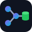

See how a request flows through your Java code
Open a Java / Spring project folder. FlowLens reads the source on this machine — nothing is uploaded.
Tip: drop a folder onto this window.
Indexing…

FlowLensOpen a Java / Spring project folder. FlowLens reads the source on this machine — nothing is uploaded.
Tip: drop a folder onto this window.